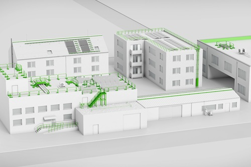

Diese DGUV Information gibt erläuternde Hinweise zu den Anforderungen des Bauordnungsrechts, des Arbeitsschutzgesetzes (ArbSchG), der Arbeitsstättenverordnung (ArbStättV) und insbesondere der Technischen Regeln für Arbeitsstätten ASR A1.8 "Verkehrswege" und ASR A2.1 "Schutz vor Absturz und herabfallenden Gegenständen, Betreten von Gefahrenbereichen", der Baustellenverordnung (BaustellV), den Berufsgenossenschaftlichen Regelungen, insbesondere der DGUV Vorschrift 38 "Bauarbeiten", und zu einschlägigen Normen, die bei der Auswahl von Absturzsicherungssystemen auf Dächern zu berücksichtigen sind.
Diese DGUV Information richtet sich in erster Linie an den Bauherren und die Bauherrin bzw. die von Ihnen beauftragten Personen oder Unternehmen und soll Hilfestellung bei der Umsetzung der Pflichten aufzeigen.
Die in dieser DGUV Information enthaltenen beispielhaften Lösungen und Empfehlungen schließen andere, mindestens ebenso sichere Lösungen und Vorgehensweisen nicht aus, wenn Sicherheit und Gesundheitsschutz in gleicher Weise gewährleistet sind.
Sind zur Konkretisierung staatlicher Arbeitsschutzvorschriften, von den dafür eingerichteten Ausschüssen, technische Regeln ermittelt worden, sind diese vorrangig zu beachten.

Abb. 1 Beispiele für Zuwegungen und Absturzschutzmaßnahmen für Instandhaltungsarbeiten auf Dachflächen